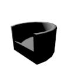

De la 2D à la 3D : L'Évolution des Champs de Radiance
Comprendre et évaluer la transition technologique majeure intervenue entre 2020 et 2024 : de l'optimisation continue par scène (NeRF), à la généralisation monoculaire par CNN (pixelNeRF), jusqu'aux modèles fondation multimodaux instantanés (LRM / TripoSR).
La Frise de l'Évolution Technologique (2020 → 2024)
1. NeRF Classique
Représentation continue implicite via un MLP profond. Optimisation continue par descente de gradient sur une scène unique.
2. pixelNeRF
Conditionnement spatial par CNN (ResNet-34). Apprend des a priori de forme sur ShapeNet pour prédire la 3D à partir d'une seule vue.
3. LRM / TripoSR
Modèle fondation Vision Transformer (DINO ViT) prédisant directement un Triplane-NeRF et extrayant un maillage 3D (.obj) instantané.
Synthèse Comparative du Benchmark
| Critère d'Évaluation | 1. NeRF (2020) | 2. pixelNeRF (2021) | 3. LRM / TripoSR (2023) |
|---|---|---|---|
| Paradigme d'apprentissage | Optimisation par scène (overfitting pur) | Conditionnement spatialisé (CNN Prior) | Modèle Fondation 3D (Transformer) |
| Nombre de vues en entrée | ~100 photos denses multi-angles | 1 seule image (Monoculaire) | 1 seule image (In-the-wild) |
| Calibration Caméra (R, t) | Obligatoire (COLMAP SfM) | Poses relatives d'entraînement | Aucune (Non calibré) |
| Temps de calcul total (T4) | ~15 min entraînement GPU | ~3 min volume rendering | < 1 seconde (~0.6s) |
| Résolution native | 800 × 800 px | 128 × 128 px (SRN Chairs) | 512 × 512 px / Mesh 256³ |
| Format de sortie 3D | Champ de radiance volumique | Champ de radiance volumique | Maillage 3D (.obj) + Rendu vidéo |
| Qualité géométrique constatée | Excellente sur la scène (PSNR 17.76 dB) | Silhouette nette, face arrière floue | Géométrie étanche, nette et instantanée |
NeRF : Neural Radiance Fields
NeRF modélise une scène continue comme un champ de radiance 5D continu via un Perceptron Multicouche (MLP) profond :
F_Θ : (x, y, z, θ, φ) ⟶ (r, g, b, σ)
Positional Encoding (Encodage Positionnel)
Comble le biais spectral des réseaux profonds en projetant les coordonnées dans un espace harmonique de dimension supérieure (60 dims pour x, 24 pour d) : γ(p) = (sin(2⁰πp), cos(2⁰πp), ..., sin(2ᴸ⁻¹πp), cos(2ᴸ⁻¹πp))
Intégrale de Rendu Volumique (Volume Rendering)
Lancer de rayons numériques avec quadrature discrète et calcul de la transmittance accumulée T_i pour estimer la couleur finale de chaque pixel.
pixelNeRF : Généralisation Monoculaire
pixelNeRF résout l'overfitting de NeRF : au lieu d'apprendre une scène par cœur, le réseau est conditionné par l'image grâce à un encodeur convolutif pré-entraîné sur des milliers d'objets (ShapeNet).
Extraction & Projection Spatiale π(X)
Un ResNet-34 extrait une pyramide de caractéristiques visuelles 2D. Chaque point 3D échantillonné le long d'un rayon virtuel est projeté sur l'image source 2D pour y extraire sa feature locale par interpolation bilinéaire.
Analyse Critique du Flou Monoculaire
Sur 1 seule vue, l'information de profondeur est absente et la face arrière est cachée : le réseau applique son prior moyen statistique de ShapeNet, ce qui crée un flou géométrique sur la face cachée.

LRM / TripoSR : Modèle Fondation Instantané
LRM représente l'état de l'art actuel (Hong et al., 2023 / Stability AI). Il remplace les CNN lents par des Vision Transformers (DINO ViT) et prédit directement une représentation 3D explicite (Triplane NeRF).
Détourage Robuste Bria-RMBG 2.0 ONNX
Suppression automatique et instantanée du fond via `rembg`, normalisation alpha et recentrage sur premier plan (`resize_foreground 0.85`).
Triplane-NeRF & Marching Cubes 256³
Décodeur Transformer prédisant 3 plans orthogonaux (XY, XZ, YZ) et extraction directe d'un maillage polygonal 3D étanche (.obj) via `torchmcubes`.
Comprendre les Métriques d'Évaluation
En vision 3D et synthèse de nouvelles vues (*Novel View Synthesis*), on évalue quantitativement la fidélité de l'image générée par rapport à la photo réelle de référence (*Ground Truth*) avec trois métriques complémentaires :
Peak Signal-to-Noise Ratio
Fidélité pixel par pixel brute (Signal/Bruit)
Mesure l'erreur quadratique moyenne (MSE) sur les intensités RGB. Indique la conformité globale des couleurs mais peut tolérer un léger flou uniforme.
Structural Similarity
Cohérence des formes, arêtes et contrastes
Compare la luminance, le contraste et les structures locales. Plus sensible à la netteté des contours géométriques qu'un simple calcul pixel à pixel.
Perceptual Similarity
Distance perceptive neuronale profonde
Passe l'image générée et la cible dans un réseau AlexNet pré-entraîné. C'est la métrique la plus fidèle à ce que l'œil humain juge photoréaliste.
Sortie JSON Brute Officielle (`metrics_30000.json`)
nerfacto @ 30 000 itérations
{
"checkpoint": "outputs/unnamed/nerfacto/2026-11-25_091818/nerfstudio_models/step-000029999.ckpt",
"results": {
"psnr": 17.761611938476562,
"psnr_std": 3.14078950881958,
"ssim": 0.7695554494857788,
"ssim_std": 0.0490608774125576,
"lpips": 0.12989789247512817,
"num_rays_per_sec": 29016.37109375,
"fps": 0.04533807933330536
}
}
Zone de Test Interactive (Image 2D ⟶ Rendu 3D)
Testez la synthèse 3D en important une photo 2D ou en choisissant un exemple pour comparer le comportement de pixelNeRF (conditionnement CNN) face à LRM / TripoSR (Transformer instantané).
Visualiseur 3D Interactif
La géométrie 3D a été extraite via l'encodeur DINO et projetée sur les 3 plans orthogonaux du Triplane NeRF. Le maillage polygonal est prêt à l'export.